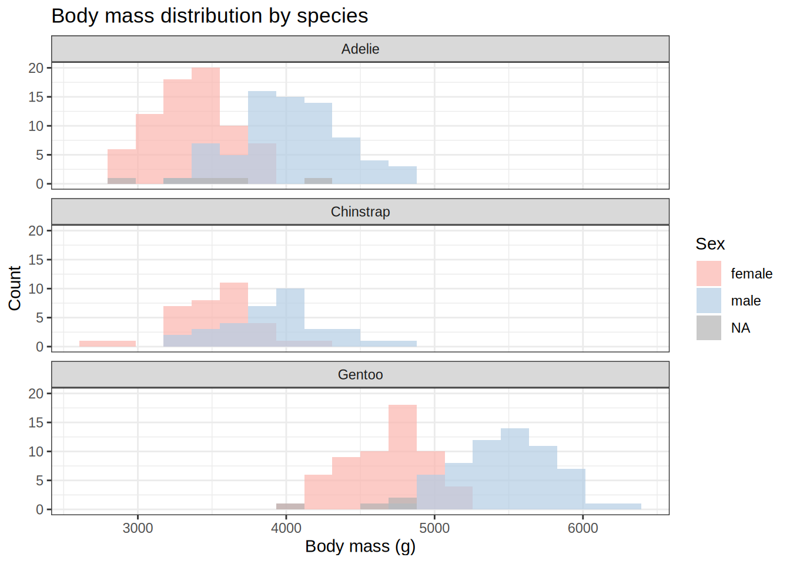
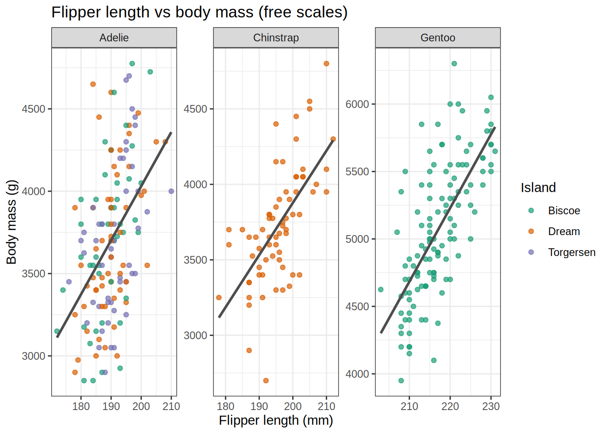
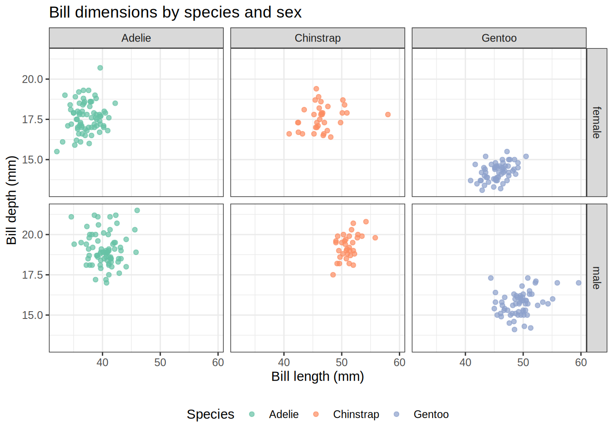
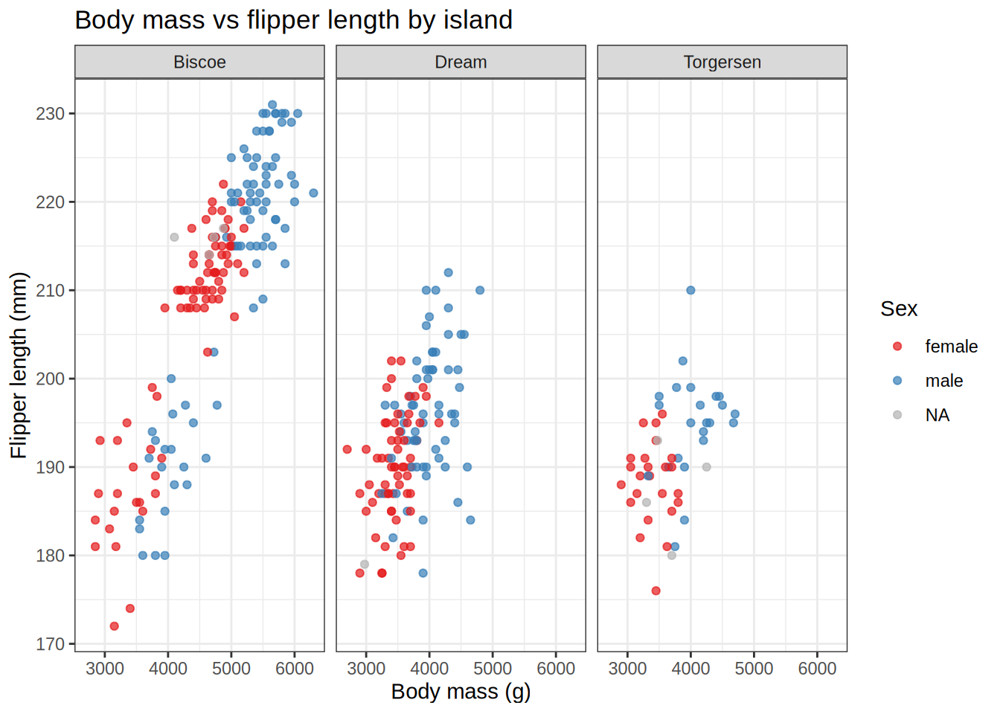
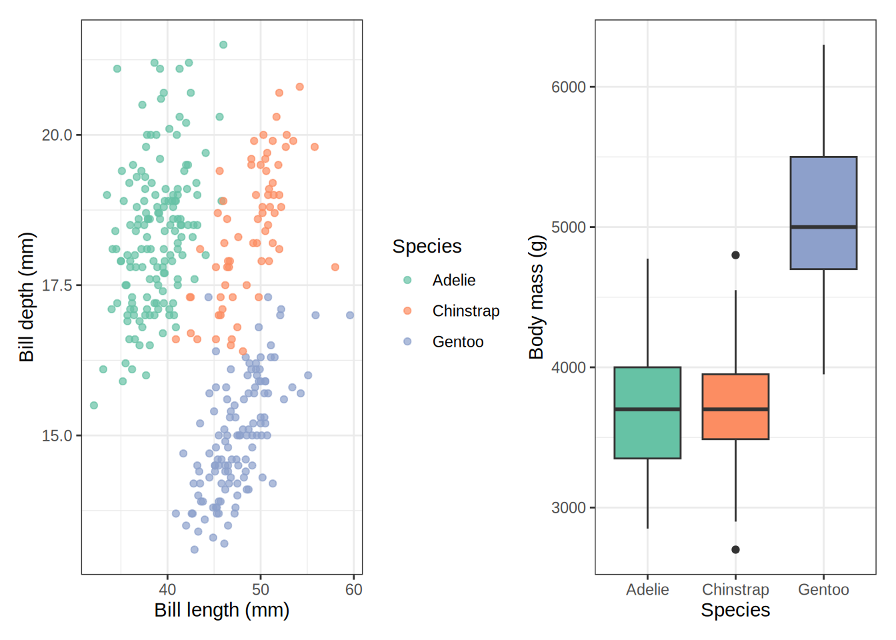
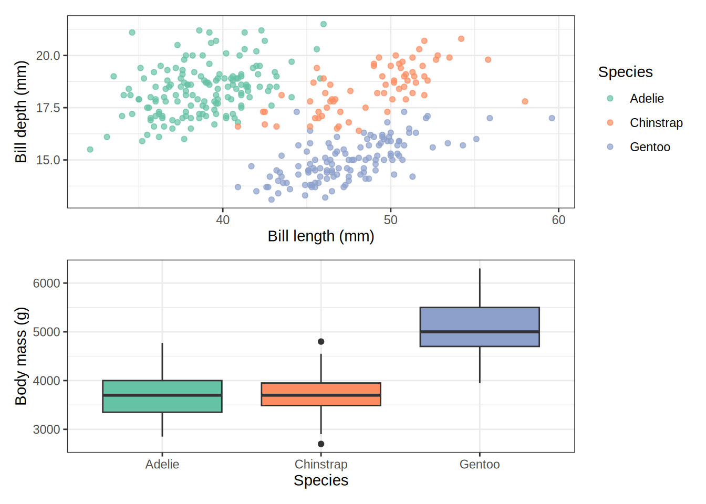

Combining and faceting figures with patchwork, cowplot, facet_wrap, and facet_grid
Learn four powerful approaches to multi-panel plots in R — use facet_wrap and facet_grid to split a single dataset by groups, or reach for patchwork and cowplot to stitch together entirely different figures into a polished layout.
code
ggplot2
dataviz
Author
Noah Weidig
Published
March 28, 2026
One plot is rarely enough. Whether you are comparing species across islands, aligning a scatter plot next to a box plot, or building a manuscript figure with labeled panels, multi-panel layouts are a daily tool in data visualization. R gives you two broad strategies: faceting (splitting one plot by a variable) and plot composition (gluing separate plots together). This post covers both, using the Palmer Penguins dataset throughout.
Setup
Code
# Uncomment to install any missing packages# install.packages(c("ggplot2", "dplyr", "palmerpenguins", "patchwork", "cowplot"))library(ggplot2)library(dplyr)library(palmerpenguins)library(patchwork)library(cowplot)penguins <- palmerpenguins::penguins
Faceting: Splitting One Plot by a Variable
Faceting is built into ggplot2. You write a single ggplot() call, then add facet_wrap() or facet_grid() to automatically replicate the plot for each level of a grouping variable. All panels share the same axes by default, making comparisons easy.
facet_wrap
facet_wrap() lays panels out in a ribbon that wraps to a new row once it hits a set number of columns. It is the go-to choice when you have one grouping variable and want ggplot2 to handle the layout for you.
The ~species formula tells ggplot2 which variable to facet on. By default it picks the number of columns automatically, but you can override that with ncol or nrow.
Code
ggplot(penguins, aes(x = body_mass_g, fill = sex)) +geom_histogram(bins =20, na.rm =TRUE, position ="identity", alpha =0.7) +facet_wrap(~species, ncol =1) +scale_fill_brewer(palette ="Pastel1", na.value ="grey70") +labs(title ="Body mass distribution by species",x ="Body mass (g)",y ="Count",fill ="Sex" ) +theme_bw()

Free scales
By default all panels share the same axis limits (scales = "fixed"). Set scales = "free", "free_x", or "free_y" when the ranges differ dramatically between groups and you care more about within-panel pattern than cross-panel comparison.
Code
ggplot(penguins, aes(x = flipper_length_mm, y = body_mass_g)) +geom_point(aes(color = island), alpha =0.7, na.rm =TRUE) +geom_smooth(method ="lm", se =FALSE, na.rm =TRUE, color ="grey30") +facet_wrap(~species, scales ="free") +scale_color_brewer(palette ="Dark2") +labs(title ="Flipper length vs body mass (free scales)",x ="Flipper length (mm)",y ="Body mass (g)",color ="Island" ) +theme_bw()

facet_grid
facet_grid() creates a strict rows × columns grid defined by two variables. Use it when you want to cross-tabulate two grouping variables and keep the layout perfectly aligned.
Code
ggplot( penguins |>filter(!is.na(sex)),aes(x = bill_length_mm, y = bill_depth_mm)) +geom_point(aes(color = species), alpha =0.7, na.rm =TRUE) +facet_grid(sex ~ species) +scale_color_brewer(palette ="Set2") +labs(title ="Bill dimensions by species and sex",x ="Bill length (mm)",y ="Bill depth (mm)",color ="Species" ) +theme_bw() +theme(legend.position ="bottom")

The formula sex ~ species puts sex levels along rows and species levels across columns. Use . to suppress one dimension: ~ species gives one row of columns, sex ~ . gives one column of rows.
Code
# One row of columns (equivalent to facet_wrap with fixed layout)ggplot(penguins, aes(x = body_mass_g, y = flipper_length_mm)) +geom_point(aes(color = sex), alpha =0.7, na.rm =TRUE) +facet_grid(. ~ island) +scale_color_brewer(palette ="Set1", na.value ="grey70") +labs(title ="Body mass vs flipper length by island",x ="Body mass (g)",y ="Flipper length (mm)",color ="Sex" ) +theme_bw()

facet_wrap vs facet_grid at a glance
Feature
facet_wrap
facet_grid
Variables
One
Two (rows × columns)
Layout
Wraps automatically
Strict grid
Best for
One grouping variable
Crossing two variables
Free scales
Yes (scales =)
Yes (scales =)
Space control
nrow / ncol
Fixed by variable levels
Plot Composition: Combining Separate Plots
Sometimes you need panels that show different variables, geoms, or even different datasets side by side. That is where patchwork and cowplot come in — they let you take any ggplot objects and arrange them into a single figure.
Let us build a few reusable plots to combine throughout these examples.
Code
p_scatter <-ggplot(penguins, aes(x = bill_length_mm, y = bill_depth_mm,color = species)) +geom_point(alpha =0.7, na.rm =TRUE) +scale_color_brewer(palette ="Set2") +labs(x ="Bill length (mm)", y ="Bill depth (mm)", color ="Species") +theme_bw()p_box <-ggplot(penguins, aes(x = species, y = body_mass_g, fill = species)) +geom_boxplot(na.rm =TRUE, show.legend =FALSE) +scale_fill_brewer(palette ="Set2") +labs(x ="Species", y ="Body mass (g)") +theme_bw()p_hist <-ggplot(penguins, aes(x = flipper_length_mm, fill = species)) +geom_histogram(bins =25, alpha =0.7, na.rm =TRUE, position ="identity") +scale_fill_brewer(palette ="Set2") +labs(x ="Flipper length (mm)", y ="Count", fill ="Species") +theme_bw()p_bar <-ggplot(penguins, aes(x = island, fill = species)) +geom_bar(position ="dodge") +scale_fill_brewer(palette ="Set2") +labs(x ="Island", y ="Count", fill ="Species") +theme_bw()
patchwork
patchwork extends ggplot2 with a simple operator-based syntax. After loading the package, you can combine plots with +, /, and | exactly like arithmetic.
Code
# Side by sidep_scatter + p_box

Code
# Stackedp_scatter / p_box

Layouts with plot_layout()
plot_layout() gives you fine-grained control over the grid, including relative widths, heights, and shared guides.
cowplot (by Claus Wilke) takes a slightly different approach. Its main function is plot_grid(), which accepts a list of plots and arranges them with precise alignment control. It is especially useful when panels have different axis structures and you need exact pixel-level alignment.
Multi-panel layouts take a little practice, but once you have the patterns down they become second nature. Start with facet_wrap whenever a single variable is doing the grouping, reach for facet_grid when you are crossing two factors, and pull in patchwork or cowplot whenever you need to combine fundamentally different plots into one cohesive figure.
Source Code
---title: "Multi-Panel Plots in R"subtitle: "Combining and faceting figures with patchwork, cowplot, facet_wrap, and facet_grid"author: "Noah Weidig"date: "2026-03-28"categories: [code, ggplot2, dataviz]description: "Learn four powerful approaches to multi-panel plots in R — use facet_wrap and facet_grid to split a single dataset by groups, or reach for patchwork and cowplot to stitch together entirely different figures into a polished layout."execute: warning: false message: falsetoc: truetoc-depth: 2code-fold: show---One plot is rarely enough. Whether you are comparing species across islands, aligning a scatter plot next to a box plot, or building a manuscript figure with labeled panels, multi-panel layouts are a daily tool in data visualization. R gives you two broad strategies: **faceting** (splitting one plot by a variable) and **plot composition** (gluing separate plots together). This post covers both, using the Palmer Penguins dataset throughout.# Setup```{r}#| label: setup# Uncomment to install any missing packages# install.packages(c("ggplot2", "dplyr", "palmerpenguins", "patchwork", "cowplot"))library(ggplot2)library(dplyr)library(palmerpenguins)library(patchwork)library(cowplot)penguins <- palmerpenguins::penguins```# Faceting: Splitting One Plot by a VariableFaceting is built into ggplot2. You write a single `ggplot()` call, then add `facet_wrap()` or `facet_grid()` to automatically replicate the plot for each level of a grouping variable. All panels share the same axes by default, making comparisons easy.## facet_wrap`facet_wrap()` lays panels out in a ribbon that wraps to a new row once it hits a set number of columns. It is the go-to choice when you have **one grouping variable** and want ggplot2 to handle the layout for you.```{r}#| label: facet-wrap-basicggplot(penguins, aes(x = bill_length_mm, y = bill_depth_mm, color = species)) +geom_point(alpha =0.7, na.rm =TRUE) +facet_wrap(~species) +scale_color_brewer(palette ="Set2") +labs(title ="Bill dimensions by species",x ="Bill length (mm)",y ="Bill depth (mm)",color ="Species" ) +theme_bw() +theme(legend.position ="none")```The `~species` formula tells ggplot2 which variable to facet on. By default it picks the number of columns automatically, but you can override that with `ncol` or `nrow`.```{r}#| label: facet-wrap-ncolggplot(penguins, aes(x = body_mass_g, fill = sex)) +geom_histogram(bins =20, na.rm =TRUE, position ="identity", alpha =0.7) +facet_wrap(~species, ncol =1) +scale_fill_brewer(palette ="Pastel1", na.value ="grey70") +labs(title ="Body mass distribution by species",x ="Body mass (g)",y ="Count",fill ="Sex" ) +theme_bw()```### Free scalesBy default all panels share the same axis limits (`scales = "fixed"`). Set `scales = "free"`, `"free_x"`, or `"free_y"` when the ranges differ dramatically between groups and you care more about within-panel pattern than cross-panel comparison.```{r}#| label: facet-wrap-free-scalesggplot(penguins, aes(x = flipper_length_mm, y = body_mass_g)) +geom_point(aes(color = island), alpha =0.7, na.rm =TRUE) +geom_smooth(method ="lm", se =FALSE, na.rm =TRUE, color ="grey30") +facet_wrap(~species, scales ="free") +scale_color_brewer(palette ="Dark2") +labs(title ="Flipper length vs body mass (free scales)",x ="Flipper length (mm)",y ="Body mass (g)",color ="Island" ) +theme_bw()```## facet_grid`facet_grid()` creates a strict **rows × columns** grid defined by two variables. Use it when you want to cross-tabulate two grouping variables and keep the layout perfectly aligned.```{r}#| label: facet-grid-basicggplot( penguins |>filter(!is.na(sex)),aes(x = bill_length_mm, y = bill_depth_mm)) +geom_point(aes(color = species), alpha =0.7, na.rm =TRUE) +facet_grid(sex ~ species) +scale_color_brewer(palette ="Set2") +labs(title ="Bill dimensions by species and sex",x ="Bill length (mm)",y ="Bill depth (mm)",color ="Species" ) +theme_bw() +theme(legend.position ="bottom")```The formula `sex ~ species` puts `sex` levels along rows and `species` levels across columns. Use `.` to suppress one dimension: `~ species` gives one row of columns, `sex ~ .` gives one column of rows.```{r}#| label: facet-grid-one-dim# One row of columns (equivalent to facet_wrap with fixed layout)ggplot(penguins, aes(x = body_mass_g, y = flipper_length_mm)) +geom_point(aes(color = sex), alpha =0.7, na.rm =TRUE) +facet_grid(. ~ island) +scale_color_brewer(palette ="Set1", na.value ="grey70") +labs(title ="Body mass vs flipper length by island",x ="Body mass (g)",y ="Flipper length (mm)",color ="Sex" ) +theme_bw()```### facet_wrap vs facet_grid at a glance| Feature | `facet_wrap` | `facet_grid` ||---|---|---|| Variables | One | Two (rows × columns) || Layout | Wraps automatically | Strict grid || Best for | One grouping variable | Crossing two variables || Free scales | Yes (`scales =`) | Yes (`scales =`) || Space control | `nrow` / `ncol` | Fixed by variable levels |# Plot Composition: Combining Separate PlotsSometimes you need panels that show **different variables, geoms, or even different datasets** side by side. That is where `patchwork` and `cowplot` come in — they let you take any ggplot objects and arrange them into a single figure.Let us build a few reusable plots to combine throughout these examples.```{r}#| label: base-plotsp_scatter <-ggplot(penguins, aes(x = bill_length_mm, y = bill_depth_mm,color = species)) +geom_point(alpha =0.7, na.rm =TRUE) +scale_color_brewer(palette ="Set2") +labs(x ="Bill length (mm)", y ="Bill depth (mm)", color ="Species") +theme_bw()p_box <-ggplot(penguins, aes(x = species, y = body_mass_g, fill = species)) +geom_boxplot(na.rm =TRUE, show.legend =FALSE) +scale_fill_brewer(palette ="Set2") +labs(x ="Species", y ="Body mass (g)") +theme_bw()p_hist <-ggplot(penguins, aes(x = flipper_length_mm, fill = species)) +geom_histogram(bins =25, alpha =0.7, na.rm =TRUE, position ="identity") +scale_fill_brewer(palette ="Set2") +labs(x ="Flipper length (mm)", y ="Count", fill ="Species") +theme_bw()p_bar <-ggplot(penguins, aes(x = island, fill = species)) +geom_bar(position ="dodge") +scale_fill_brewer(palette ="Set2") +labs(x ="Island", y ="Count", fill ="Species") +theme_bw()```## patchwork**patchwork** extends ggplot2 with a simple operator-based syntax. After loading the package, you can combine plots with `+`, `/`, and `|` exactly like arithmetic.```{r}#| label: patchwork-basic# Side by sidep_scatter + p_box``````{r}#| label: patchwork-stack# Stackedp_scatter / p_box```### Layouts with `plot_layout()``plot_layout()` gives you fine-grained control over the grid, including relative widths, heights, and shared guides.```{r}#| label: patchwork-layout(p_scatter | p_box | p_hist) +plot_layout(widths =c(2, 1, 1))``````{r}#| label: patchwork-complex# A 2×2 grid with shared legend collected at the bottom(p_scatter + p_box) / (p_hist + p_bar) +plot_layout(guides ="collect") &theme(legend.position ="bottom")```### Panel labels with `plot_annotation()``plot_annotation()` adds a title and subtitle to the whole figure, plus automatic **A, B, C…** labels on each panel — essential for publications.```{r}#| label: patchwork-annotation(p_scatter + p_box) / (p_hist + p_bar) +plot_annotation(title ="Palmer Penguins: a four-panel summary",subtitle ="Bill dimensions, body mass, flipper distribution, and island counts",tag_levels ="A" ) +plot_layout(guides ="collect") &theme(legend.position ="bottom")```### Nesting layoutsYou can nest patchwork assemblies inside each other using `wrap_plots()` or by grouping with parentheses.```{r}#| label: patchwork-nestedright_column <- p_box / p_barp_scatter | right_column```## cowplot**cowplot** (by Claus Wilke) takes a slightly different approach. Its main function is `plot_grid()`, which accepts a list of plots and arranges them with precise alignment control. It is especially useful when panels have different axis structures and you need **exact pixel-level alignment**.```{r}#| label: cowplot-basicplot_grid(p_scatter, p_box, ncol =2)``````{r}#| label: cowplot-labels# Add panel labelsplot_grid(p_scatter, p_box, p_hist, p_bar,labels =c("A", "B", "C", "D"),label_size =12,ncol =2)```### Controlling relative sizesUse `rel_widths` and `rel_heights` to weight panels.```{r}#| label: cowplot-rel-widthsplot_grid(p_scatter, p_box,ncol =2,rel_widths =c(2, 1),labels ="AUTO")```### Shared legends with `get_legend()`A common cowplot pattern is to pull the legend out of one plot and place it as its own element using `get_legend()`.```{r}#| label: cowplot-shared-legend# Build plots without their own legendsp_scatter_noleg <- p_scatter +theme(legend.position ="none")p_hist_noleg <- p_hist +theme(legend.position ="none")# Extract legend from the original scatterlegend <-get_legend(p_scatter)# Arrange plots + legendtop_row <-plot_grid(p_scatter_noleg, p_hist_noleg,ncol =2, labels =c("A", "B"))plot_grid(top_row, legend,ncol =1,rel_heights =c(1, 0.15))```### Aligning axes`align = "hv"` forces horizontal and vertical axis alignment across panels — critical when mixing plots with different title heights or legend sizes.```{r}#| label: cowplot-alignplot_grid(p_scatter, p_box, p_hist,align ="hv",ncol =3,labels ="AUTO")```## patchwork vs cowplot at a glance| Feature | `patchwork` | `cowplot` ||---|---|---|| Syntax | Operators (`+`, `/`, `|`) | `plot_grid()` function || Learning curve | Very low | Low || Shared legend | `plot_layout(guides = "collect")` | `get_legend()` + `plot_grid()` || Axis alignment | Automatic | `align = "hv"` || Panel labels | `plot_annotation(tag_levels =)` | `labels =` argument || Nesting | Parentheses / `wrap_plots()` | Nested `plot_grid()` calls || Best for | Quick layouts, publications | Precise alignment, mixed axes |# Putting It All TogetherYou can even combine faceting *and* composition. Here we facet a scatter plot by island, then place it alongside a summary box plot.```{r}#| label: combinedp_faceted <-ggplot(penguins, aes(x = bill_length_mm, y = bill_depth_mm,color = species)) +geom_point(alpha =0.7, na.rm =TRUE) +facet_wrap(~island) +scale_color_brewer(palette ="Set2") +labs(title ="Bill dimensions by island",x ="Bill length (mm)",y ="Bill depth (mm)",color ="Species" ) +theme_bw() +theme(legend.position ="none")p_summary <-ggplot(penguins, aes(x = species, y = bill_length_mm,fill = species)) +geom_violin(na.rm =TRUE, alpha =0.7, show.legend =FALSE) +geom_boxplot(width =0.15, na.rm =TRUE, show.legend =FALSE) +scale_fill_brewer(palette ="Set2") +labs(title ="Bill length by species",x ="Species",y ="Bill length (mm)" ) +theme_bw()p_faceted + p_summary +plot_layout(widths =c(2, 1)) +plot_annotation(title ="Penguin bill dimensions: island facets + species summary",tag_levels ="A" )```# Quick Reference| Goal | Tool | Key argument ||---|---|---|| Split one plot by one variable | `facet_wrap(~var)` | `ncol`, `nrow`, `scales` || Cross two grouping variables | `facet_grid(r ~ c)` | `scales`, `space` || Place plots side by side | `p1 \| p2` (patchwork) | — || Stack plots vertically | `p1 / p2` (patchwork) | — || Control widths/heights | `plot_layout()` | `widths`, `heights` || Add figure title + labels | `plot_annotation()` | `title`, `tag_levels` || Arrange with precise alignment | `plot_grid()` (cowplot) | `align`, `rel_widths` || Shared legend (cowplot) | `get_legend()` | — |Multi-panel layouts take a little practice, but once you have the patterns down they become second nature. Start with `facet_wrap` whenever a single variable is doing the grouping, reach for `facet_grid` when you are crossing two factors, and pull in `patchwork` or `cowplot` whenever you need to combine fundamentally different plots into one cohesive figure.